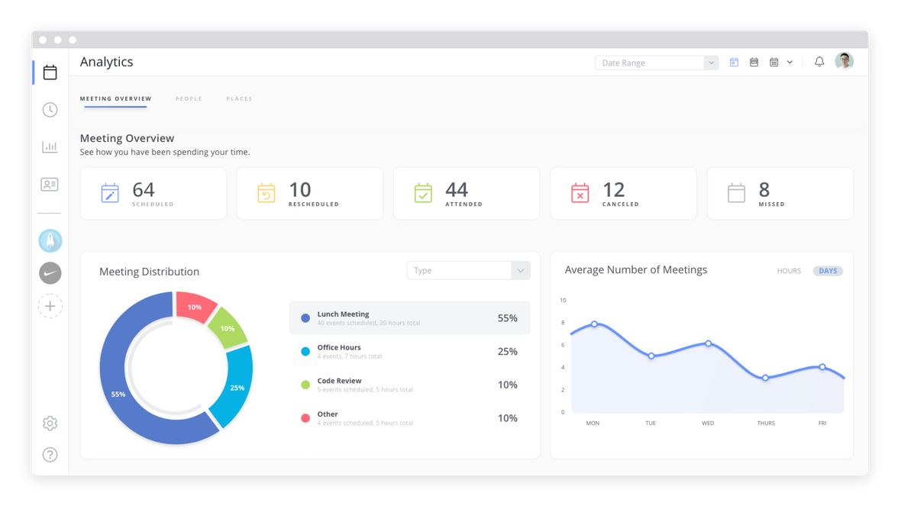
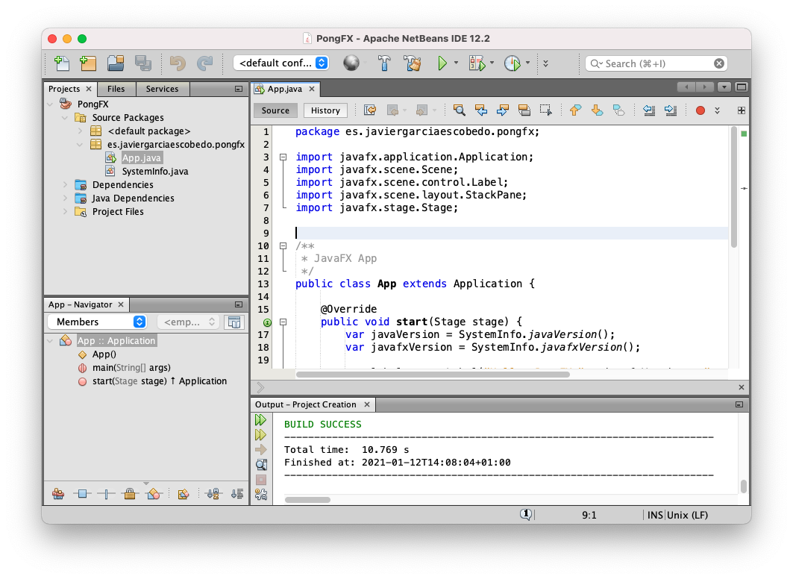

Programas utilizados
Jaspersoft es una suite de Business Intelligence cuyo núcleo es software open source. La plataforma de BI proporciona herramientas para la creación de una capa de metadatos sobre la que se crean informes de detalle, analíticos o cuadros de mando.

Java es una tecnología que se usa para el desarrollo de aplicaciones que convierten a la Web en un elemento más interesante y útil. Java no es lo mismo que javascript, que se trata de una tecnología sencilla que se usa para crear páginas web y solamente se ejecuta en el explorador.

MySQL es el sistema de gestión de bases de datos relacional más extendido en la actualidad al estar basada en código abierto. Desarrollado originalmente por MySQL AB, fue adquirida por Sun MicroSystems en 2008 y esta su vez comprada por Oracle Corporation en 2010, la cual ya era dueña de un motor propio InnoDB para MySQL.
Recursos sobre TIBCO Jaspersoft BI
Página de caracteristicas de producto de TIBCO Jaspersoft BI Matriz de comparación de ediciones de Jaspersoft BI (Community, Reporting, Profesional, Enterprise y AWS) Web oficial de Jaspersoft Community, y páginas de producto y de descarga de los componentes open source de la plataforma: